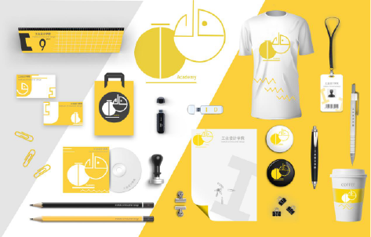

Date:2019-10-08
Use software: Adobe Photoshop
Adobe Illustrator
Design around the Institute of Industrial Design
Icons using the Chinese character "ind-
ustry", the two words recombined des-
ign, jumping yellow makes the whole s-
tyle bright, in each product is flexible u-
se of the icon style, and industrial initials design.
Visual recognition system is a unified v-
isual symbol system. Visual recognition is a static recognition symbol materializ-
ation, visual communication form, the most projects, the most extensive level, the effect is more direct.
Visual recognition system belongs to the VI in CIS, with the complete, systematic visual commu-
nication system, the enterprise concept, cultural characteristics, service content, enterprise norms and other abstract meaning into the concept of specific symbols, to create a unique corporate im-
age. The visual recognition system is divided into basic element system and application element system. Basic elements of the system mainly includes: enterprise name, corporate logo, standard word, standard color, symbolic pattern, publicity, marketing report. Application system mainly in-
cludes: office supplies, production equipment, building environment, product packaging, advert-
ising media, transportation, clothing and uniforms, flags, signs, signs, windows, display and so on. Visual recognition (VI) is generally accepted in CI systems and is based on a dominant position.